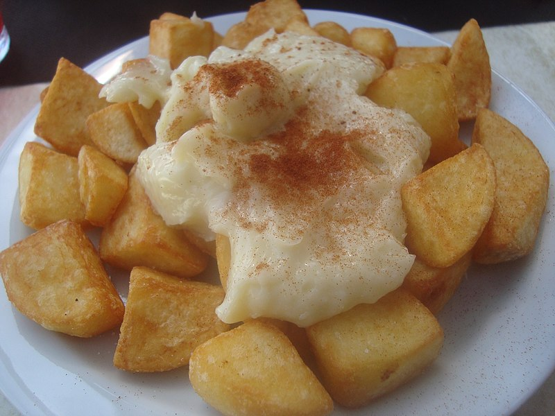

Patatas Bravas Recipe

Description
This a common tapa in spain, but it has many variants. This one is very typical in Valencia, just fried potatoes with Allioli and a slight touch of paprika.
It is also a very simple recipe, but hard to master.
Ingredients
- Potatoes - 500 g
- 1 spoonful of paprika
- Olive oil for frying - Around 200 ml (as needed)
- Allioli - around 200 g
- Salt - as desired
Steps
- Peel the potatoes and clean them.
- Cut them in small dices, around 3 cm long.
- Heat a pan with olive oil at around 90 degrees C.
- Cook the potatoes until they are ready. We need them soft, but not crispy.
- To make them a bit crispy, put more heat when they are already cooked. Be careful not to burn them.
- Put them into a plate, with napkins at the bottom to absorb the excess oil.
- Add some salt as desired.
- Pour the allioli on top of them or at the side.
- Sprinkle the paprika around the potatoes and more importantly on the allioli.
Go back